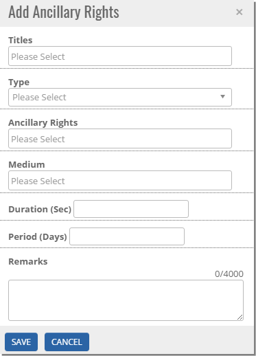
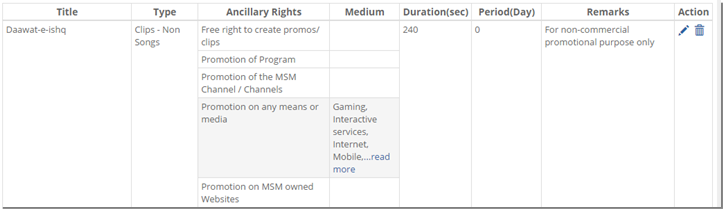


	<section>
		<article>
			<h2>Ancillary<span></span></h2>
			<div>
				<p></p>
				<p>Ancillary can be defined as Promotional & Advertising (P&A) rights acquired for a title.</p>

				<p>Click on Ancillary tab.</p>

				<p><b>Adding Ancillary Rights</b></p>

				<p>To add Ancillary rights, in Ancillary tab click on 'Add' button.</p>

				<p>On clicking Add button, following pop up will be displayed.</p>

				<div class="triangle-border top">				
					
				</div>

				<p>Select required titles in <b>Title</b>. This Title field shows list of added titles in General tab. </p>

				<p>Select <b>Type</b> referred as Ancillary right type.</p>

				<p>Based on Ancillary Type, <b>Ancillary Rights</b> will be populated.</p>

				<p>If any Ancillary <b>Medium</b> relevant to selected Ancillary Rights will be there, it will be populated in drop down.</p>
				<p>User can enter <b>Duration</b> in Seconds and <b>Period</b> in Days for relevant Ancillary right.</p>

				<p>User can enter <b>Remarks</b> upto 2000 characters.</p>

				<p>Click on <b>Save</b> button to save to the ancillary and <b>Cancel</b> to cancel the addition/modification.</p>


				<p><b>Editing Ancillary Rights</b></p>

				<p>Click on <b>Pencil icon</b> to edit the ancillary added earlier.</p>

				<p>If user wants to create new ancillary rights with slight modifications to the the one added earlier, <b>Clone</b> is used. It will simply copy all the data added earlier and open add ancillary pop up in Edit mode.</p>

				<p>To delete any ancillary, click on <b>Delete</b> button. It will ask for confirmation "Are you sure you want to delete this Ancillary Rights?". Click on <b>Yes</b> to delete the rights and <b>No</b> to cancel the delete.</p>

				<div class="triangle-border top">				
					
				</div>

			</div>
		</article>
	</section>